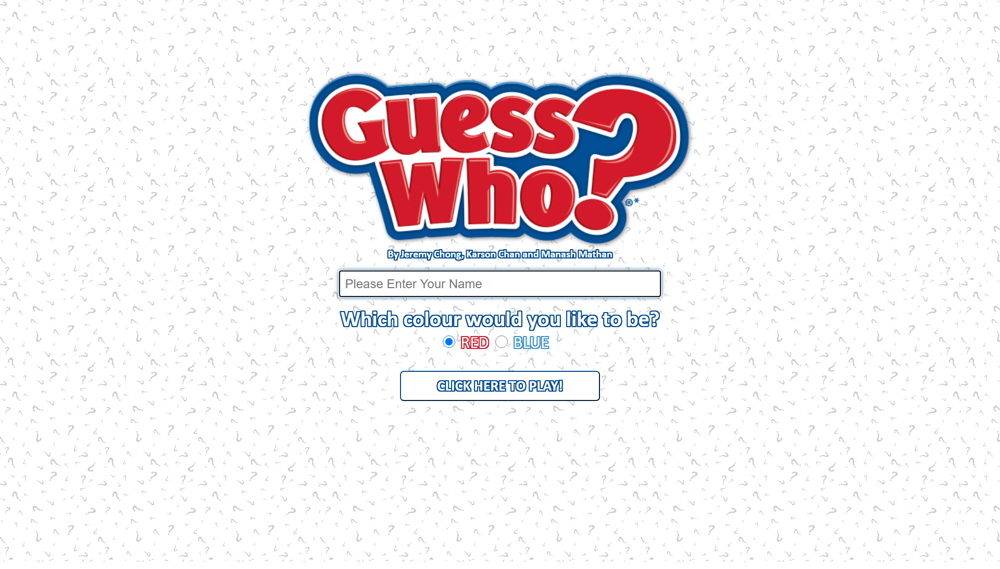
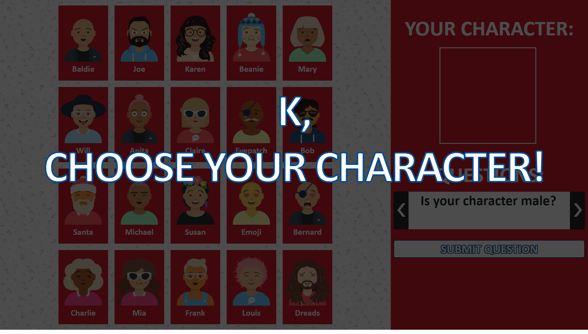
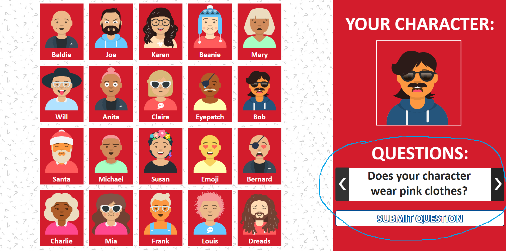
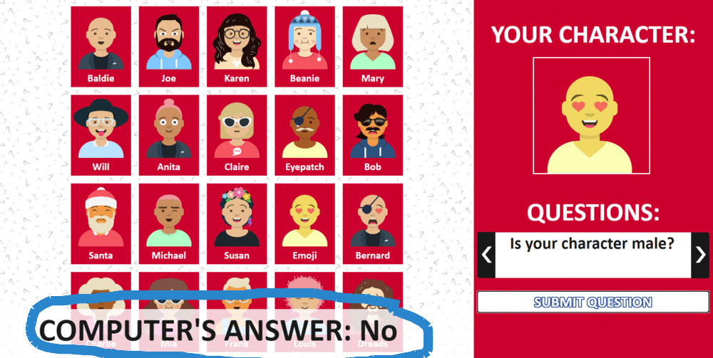
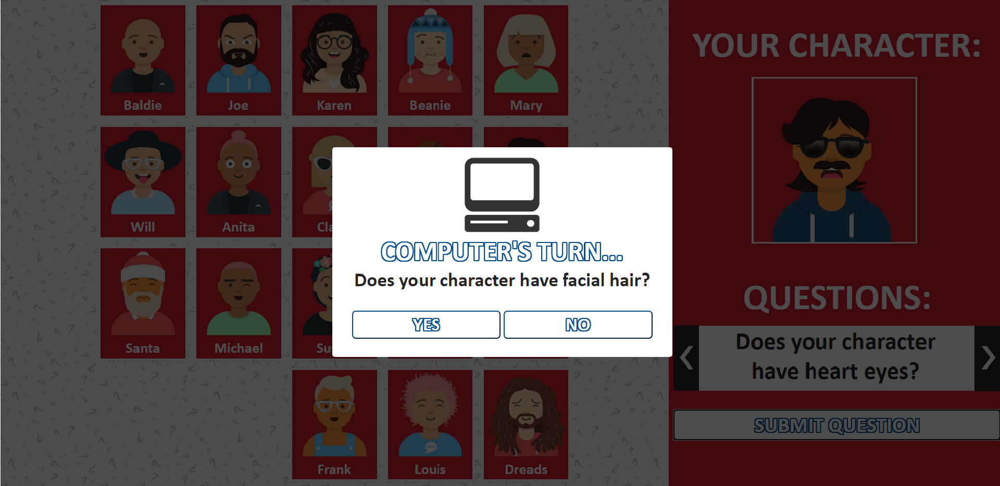
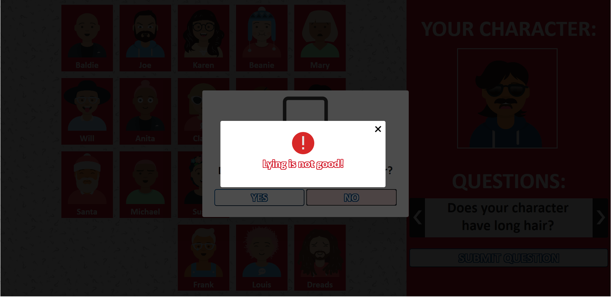
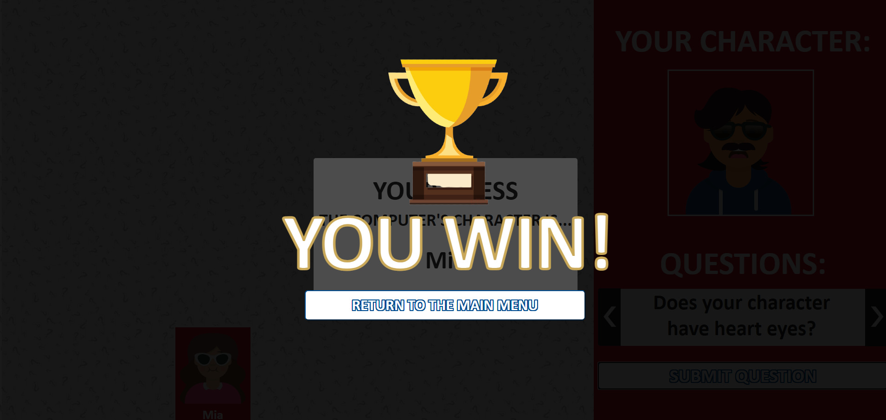
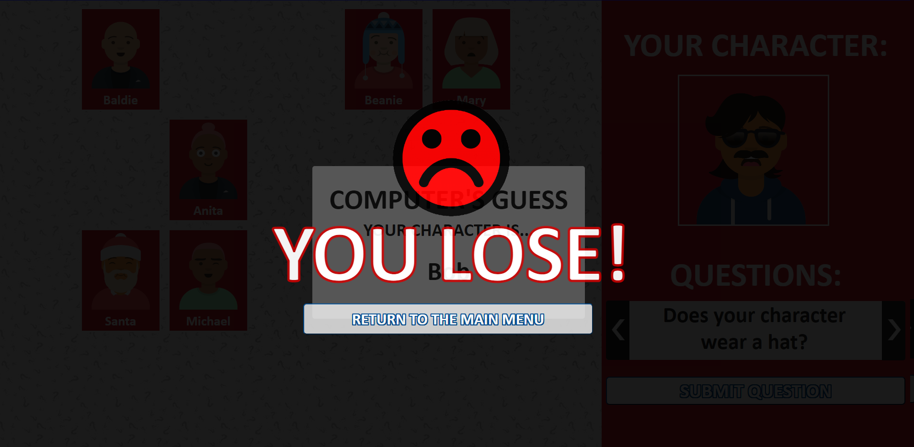

Start ScreenThis is the start screen of the game. You will be able to start playing the game once you have entered your name and have clicked the "Play" button. In this screen, you will also be able to choose which colour you want the game board to be. The red option is set as the default. |
Selecting A CharacterThis screen is the main game board. As instructed by the message, you will have to select your character by clicking on any of the character profiles on the board. |
Asking QuestionsOnce you have chosen your character, you can select certain questions on the side bar to determine the computer's character. After you have decided which question to ask, you can click "Submit question" button to select and ask that question to the computer. |
Computer's AnswerA small pop up will appear near the character grid, which will notify you the computer's answer to your question. Shortly after, this popup will disappear and will automatically eliminate the appropriate characters from the board. |
Computer's TurnThis screen will appear once your turn is finished. It will then become the computer's turn to ask a question. This screen will show you the computer question (lblCompQuestion) and you will be given an opportunity to answer the question by clicking either the Yes button or the No button. |
ErrorsIf you lie, this error will appear reminding you that lying is not allowed, forcing you to change your response to the computer's question. Other error popups will also appear reminding you to follow the game's procedure such as entering your name or not lying. |
WinningThis is the screen that will show if your guess is correct or if the computer's guess is incorrect. Clicking on the "Return to menu" button will bring you back to the game menu and allow you to play the game from the very beginning. |
LosingThis is the screen that will show if your guess is incorrect or if the computer's guess is correct. Clicking on the "Return to menu" button will bring you back to the game menu and allow you to play the game from the very beginning. |